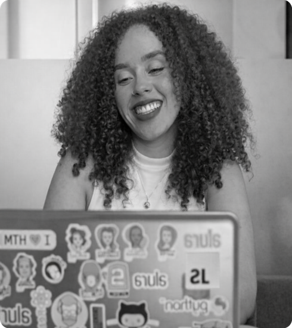

Sobre mim
Meu nome é Cauane Francisco Silva, tenho 25 anos e sou estudante de Tecnologia em Sistemas para Internet pela Universidade Nove de Julho (UNINOVE). Atualmente, também realizo formação em Desenvolvimento Front-End pela Alura, onde venho consolidando meus conhecimentos práticos na área.Durante meus estudos, adquiri experiência em HTML e CSS, além de estar em processo de aprendizado em Figma, com foco em criação de interfaces e no desenvolvimento de páginas responsivas. No momento, estou desenvolvendo meu primeiro projeto prático, que consiste na criação de uma Landing Page, aplicando os conceitos estudados e boas práticas de desenvolvimento.
Sou uma profissional dedicada, com grande interesse em aprender continuamente e evoluir na área de tecnologia. Busco uma oportunidade onde eu possa aplicar meus conhecimentos, adquirir experiência prática e contribuir de forma positiva com a equipe e os projetos da empresa.
